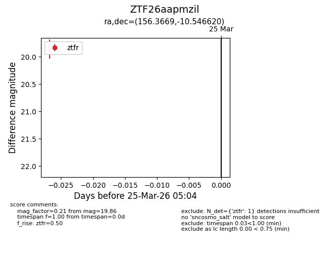
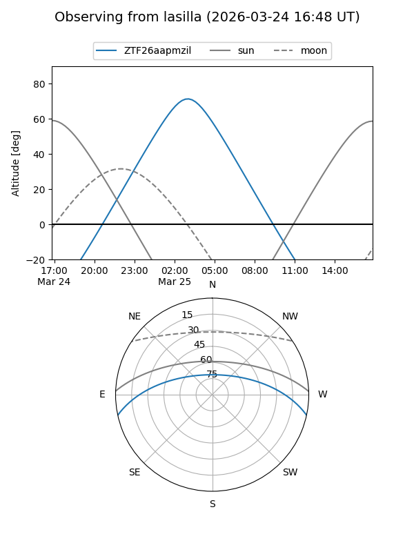
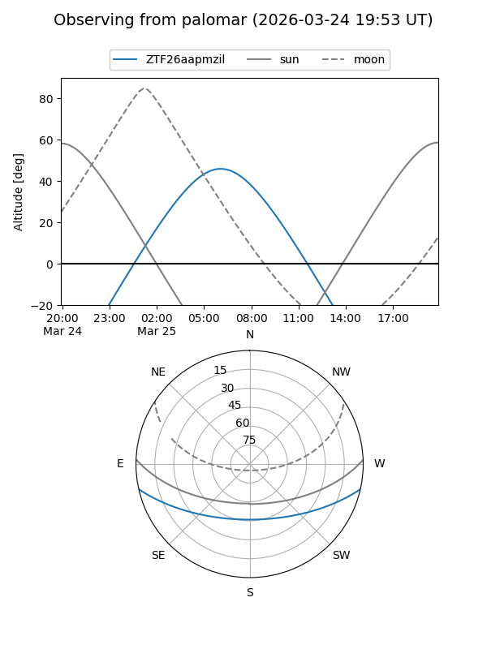

ZTF26aapmzil
Target ZTF26aapmzil at 2026-03-25 05:07
Aliases and brokers:
FINK: link
Lasair: link
ALeRCE: link
alt names
ZTF26aapmzil (ztf,fink_ztf)
Coordinates:
equatorial (ra, dec) = 156.3669,-10.54662
equatorial (HMS+DMS) = 10:25:28.06,-10:32:47.83
galactic (l, b) = (254.7608,+38.31198)
Flags:
Photometry:
last ztfr=19.86
1 ztfr detections
Lightcurve

Visibility


Additional plots